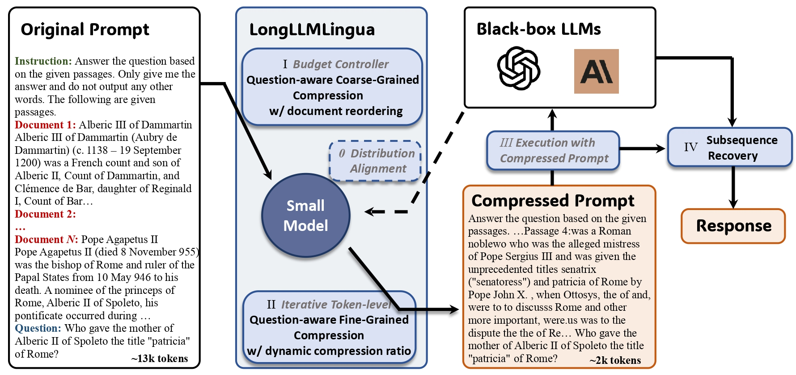
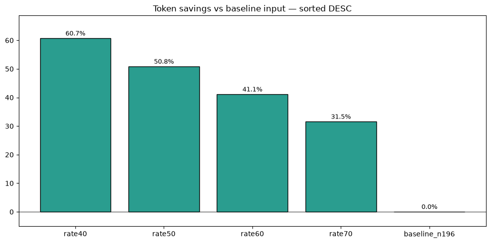
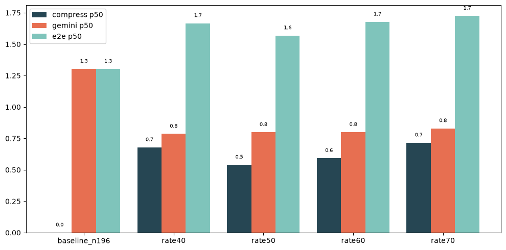
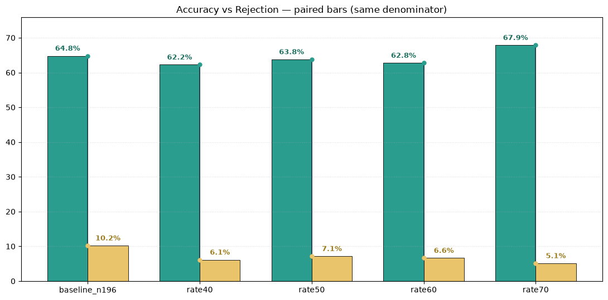
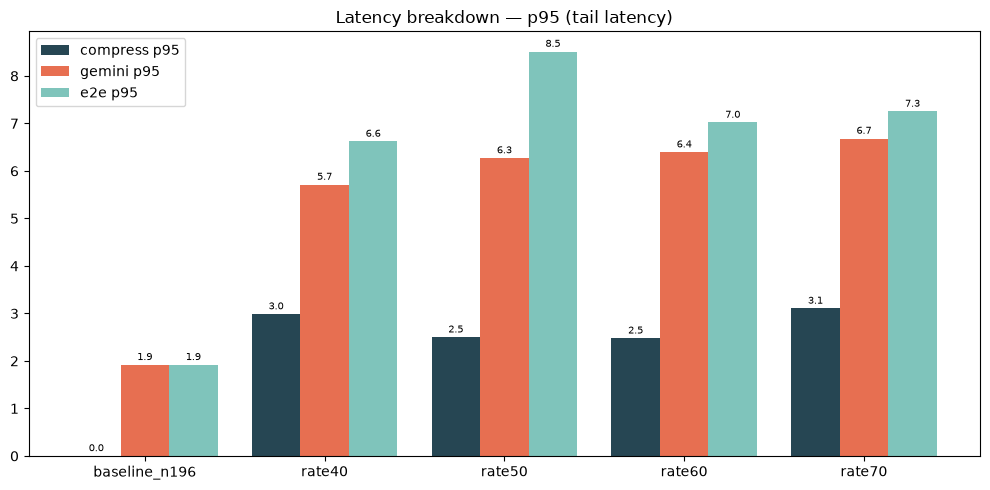
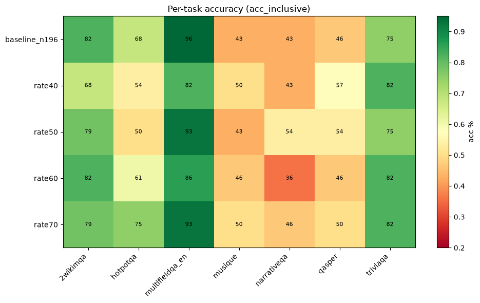

Bối cảnh
Câu hỏi nghiên cứu
Ý tưởng cốt lõi

LongLLMLingua = nén thông minh + sắp xếp lại, giữ lại phần quan trọng nhất với câu hỏi, bỏ phần thừa.
Tập dữ liệu
LongBench-styleQ&A đa ngữ cảnh dài
LLM đích
Gemini 3.5Flash Lite
LLM as judge
DeepSeekV4 Pro
Cấu hình so sánh
Metric



Giảm chi phí input token cùng với latency, vẫn giữ nguyên chất lượng câu trả lời nhưng tăng thêm chi phí sử dụng GPU.


Model Flash: Gemini 3.5 Flash Lite không phản ánh đúng được câu trả lời cho các câu hỏi yêu cầu suy luận.